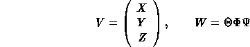
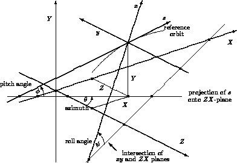

EUROPEAN ORGANIZATION FOR NUCLEAR RESEARCH

Global Reference System
The global reference orbit of the accelerator
is uniquely defined by the sequence of physical elements.
The local reference system (x, y, s)
may thus be referred to a global Cartesian coordinate system
(X, Y, Z) (see Figure 1).
The positions between beam elements are numbered 0,...,i,...n.
The local reference system
(xi, yi, si)
at position i,
i.e. the displacement and direction of the reference orbit
with respect to the system (X, Y, Z)
are defined by three displacements
(Xi, Yi, Zi)
and three angles
(Thetai, Phii, Psii)
The above quantities are defined more precisely as follows:
- X:
Displacement of the local origin in X-direction.
- Y:
Displacement of the local origin in Y-direction.
- Z:
Displacement of the local origin in Z-direction.
- THETA:
Angle of rotation (azimuth) about the global Y-axis,
between the global Z-axis and the projection
of the reference orbit onto the (Z, X)-plane.
A positive angle THETA forms a right-hand screw with the Y-axis.
- PHI:
Elevation angle, i.e. the angle between the reference orbit and its projection
onto the (Z, X)-plane.
A positive angle PHI correspond to increasing Y.
If only horizontal bends are present,
the reference orbit remains in the (Z, X)-plane.
In this case PHI is always zero.
- PSI:
Roll angle about the local s-axis,
i.e. the angle between the intersection (x, y)- and
(Z, X)-planes and the local x-axis.
A positive angle PSI forms a right-hand screw with the s-axis.
The angles (THETA, PHI, PSI) are not the Euler angles.
The reference orbit starts at the origin and points by default
in the direction of the positive Z-axis.
The initial local axes (x, y, s)
coincide with the global axes (X, Y, Z) in this order.
The six quantities (X0, Y0, Z0,
THETA0, PHI0, PSI0)
thus all have zero initial values by default.
The program user may however specify different initial conditions.
Internally the displacement is described by a vector V
and the orientation by a unitary matrix W.
The column vectors of W are the unit vectors spanning
the local coordinate axes in the order (x, y, s).
V and W have the values:

where

The reference orbit should be closed and it should not be twisted.
This means that the displacement of the local reference system
must be periodic with the revolution frequency of the accelerator,
while the position angles must be periodic modulo(2 pi)
with the revolution frequency.
If PSI is not periodic module(2 pi), coupling effects are introduced.
When advancing through a beam element,
MAD computes Vi and Wi
by the recurrence relations
Vi = Wi-1Ri + Vi-1,
Wi = wi-1Si.
The vector Ri is the displacement and the matrix
Si is the rotation of the local reference system
at the exit of the element i with respect to the entrance
of the same element.
The values of Ri and Si
are listed in the:
straight reference system
for each physical element type.

Figure 1: Global Reference System
hansg,
January 24, 1997